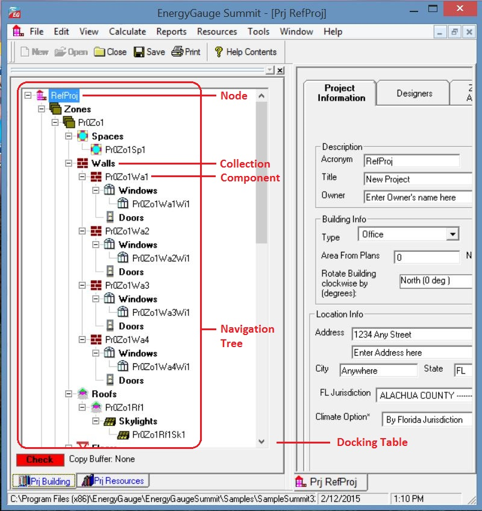

Project Explorer
|
Project Explorer |

When a project is opened, the Project Explorer (sometimes called building tree) appears. It is a hierarchical representation of the entire building. It is through the Project Explorer that one navigates the various building components. It is also used to add and delete various building components.
In general, the Project Explorer (tree) consists of nodes representing Collections and Components. Collections are containers that appear in bold face and contain one or more components under them. Example: the 'Zones' Collection contains one or more individual zones. A component represents a physical element of a building such as a wall, door, or window etc.
Collections
A collection is a group of a particular type of component. All the components in a collection are of the same type. For example, a collection of Zones only consists of individual zones.
Individual Components
A component represents a single building element. One or more components of the same type together form a collection.
Adding a component
To add any new component of a particular type first highlight the collection by left-clicking it. Right-click on the selected collection and use the 'add' option from the pops-up menu. A new component of that type will be added and the input data form will appear (usually) on the right side of the screen.
Example: to add a new wall under Zone 1, first select 'Walls' under Zone 1. Keep the cursor on the 'Walls' and right click. Select the 'Add New' option from the pop-up menu to add a new wall. The data input form for the wall will show up on the right. You may now input your data for the new wall.
Selecting a component to edit
Just clicking on an individual component opens the data input form for that component, For example, clicking on the component labeled 'Zone 1' opens the data input form for Zone 1.
Deleting a component
Select (left-click) an individual component node. Right-click the component and choose 'Delete' from the pop-up menu.
Expanding and collapsing the Project Explorer tree
Click on the + or - sign on the tree node to expand or collapse the tree. Right-clicking on a selected node opens a pop-up menu with options to expand or collapse the tree.
Exceptions - 'Plant', 'Water Heating', 'External Lighting' and 'Piping' are Collections whose components are placed on a form grid in a table format. As an example, click 'Water heating'. An input data form containing a grid with all water heaters in the project will appear.
Copying and Pasting
You can copy any component of a building, such as a Zone or Wall and paste it into the corresponding collection. For example a 'Wall' can be copied and then pasted into any 'Walls' collection.
Steps to Copy and Paste:
1) Select (using the mouse) the component that is to be copied
2) Right-click on the selected component. A pop-up menu appears.
3) Select the copy option in the pop-up menu. (The component is now placed in a Copy buffer indicated by the label at the bottom of the Project Explorer)
4) Select (using the mouse) the corresponding Collection where you would like to paste the copied component. For example, if you copied a Wall, select any 'Walls' collection.
5) Right-click on the selected collection. A pop-up menu appears.
6) Select the 'Paste' option in the pop-up menu. The component will be copied into the selected collection.